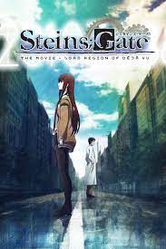
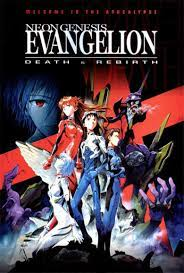
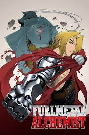
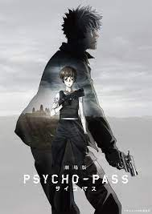
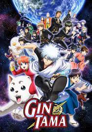
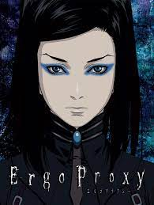
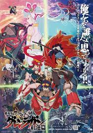
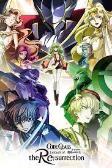
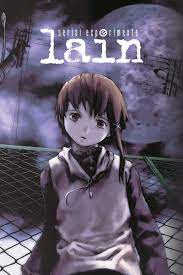
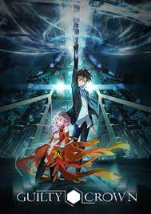

After a year in America, Kurisu Makise returns to Akihabara and reunites with Rintarou Okabe. However, their reunion is cut short when Okabe begins to experience recurring flashes of other timelines as the consequences of his time traveling start to manifest. These side effects eventually culminate in Okabe suddenly vanishing from the world, and only the startled Kurisu has any memory of his existence. In the midst of despair, Kurisu is faced with a truly arduous choice that will test both her duty as a scientist and her loyalty as a friend: follow Okabe's advice and stay away from traveling through time to avoid the potential consequences it may have on the world lines, or ignore it to rescue that she cherishes most. Regardless of her decision, the path she chooses is one that will affect the past, the present, and the future.
Rating - 8.8/10
Episodes- 26

When violent Angels descend on Earth to destroy humanity, 14-year-old Shinji finds himself a reluctant member of a small squad of pilots using giant sentient machines to combat the threat. At the age of 14 Shinji Ikari is summoned by his father to the city of Neo Tokyo-3 after several years of separation. There he unwillingly accepts the task of becoming the pilot of a giant robot by the name EVA01 and protect the world from the enigmatic invaders known as "angels." Even though he repeatedly questions why he has accepted this mission from his estranged and cold father, his doing so helps him to gradually accept himself. However, why exactly are the angels attacking and what are his father’s true intentions are yet to be unraveled.
Rating - 8.5/10
Episodes - 26

Rating - 9.1/10
Episodes - 64

Believing in humanity and order, policewoman Akane Tsunemori obeys the ruling, computerized, precognitive Sibyl System. But when she faces a criminal mastermind who can elude this perfect system, she questions both Sibyl and herself.
Rating - 8.2/10
Episodes - 22

Rating - 8.7/10
Episodes - 367

Rating - 7.9/10
Episodes - 23

Rating - 8.3/10
Episodes - 27

Rating - 8.3/10
Episodes - 50

Ratings - 8.1/10
Episodes - 13

Ratings - 7.5/10
Episodes - 22